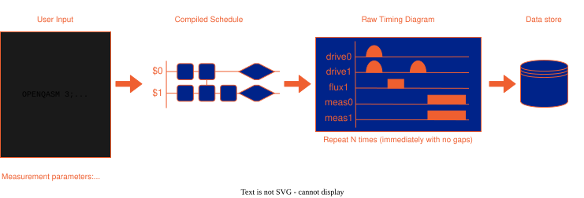

Compiler and Scheduler
NQCT follows the OpenQASM3 standard. This page details the parsing and compilation layers. See this article for details on the supported commands and command interpretation rules.
Overview
The workflow is illustrated below:

Overview of the OpenQASM/OpenPulse measurement workflow
There first stage is the user input which includes the raw OpenQASM script alongside measurement parameters. Here one specifies the measurement acquisition parameters and the mapping of the qubit registers onto the physical qubits. The key measurement parameters are:
- Acquisition Type:
RAW: The raw samples taken by the analogue to digital converter on the hardware when taking a measurement.INTEGRATION: The data is generated by IQ-demodulating the raw samples and summing the resulting complex-valued array.DISCRIMINATION: This mode takes the weighted-integrated IQ-demodulated complex numbers and uses a threshold to determine the qubit state.
- Averaging Type:
SingleShotCounts: Give the acquisition output for every experiment shot/repetition.AverageRepetitions: Take the average of the acquisition output across every experiment shot/repetition.
Number of Shots: The number of shots/repetitions to repeat the timing diagram produced from the OpenQASM script commands.
In the following example snippet, qs is a QuantumSession object selected over some hardware backend. It is used to set the script and the measurement parameters (see the Basic interfacing worked example):
my_script = r"""
OPENQASM 3;
include 'stdgates_transmon_fixed_coupler.inc';
bit[3] c;
qubit[3] q;
...
"""
qs.set_qasm(my_script)
qs.set_qreg_physical_mapping({('q',0):2, ('q',1):0, ('q',2):1}) #Map the register q onto physical qubits
#
qs.set_acquisition_type('DISCRIMINATION') #Can be DISCRIMINATION, INTEGRATION or RAW
qs.set_averaging_type('SingleShotCounts') #Can be SingleShotCounts or AverageRepetitions
qs.set_num_shots(1024)
The next stage involves script compilation, which produces a compiled schedule timing diagram. This diagram is the direct interpretation of the OpenQASM script, arranged by the scheduler (details of which are provided below). This compiled schedule is then directly interpreted into a raw timing diagram, representing the exact signals programmed into the measurement hardware. This raw timing diagram depicts a single experimental shot or repetition, which is repeated according to the number of shots defined by set_num_shots(). Finally, data from every measurement within a repetition is compiled and collated across the bit registers, as detailed below.
Note
A single shot or repetition: All code (with all pulses and defined measurements) in a given OpenQASM script are considered to be confined within a single experiment ‘shot’ or ‘repetition’. The eventual timing diagram is played shot-to-shot without any delay.
Scheduling and Alignment
The parser includes a scheduling layer that automatically manages delays to ensure hardware alignment (e.g. aligning sections for two-qubit gates).
Automatic Alignment: The parser adds “bubbles” (padding delays) to ensure multi-qubit gate timings and measurement windows align correctly.
Manual Alignment: To manually align multiple qubits so that all future gates start from the same time point, use the multi-qubit delay instruction:
delay[0] q1, q2;
Note that a delay value of zero is valid and is used specifically to enforce synchronization.
Warning
Multi-qubit reset and measurement instructions do not support automatic alignment. Unlike the multi-qubit delay instruction, multi-qubit resets or measurements are treated as separate, independent statements and may be rescheduled across different time slots.
Note
Hardware Timing Grids: The scheduler automatically handles the introduction of delay bubbles to ensure all pulses align to timing grids mandated by Look hardware limitations.
Return Data
An experiment run stores all data provided by SQDToolz: device state/diagnostics and measurement data. There is also post-processing that maps the appropriate measurements onto any associated bit registers (if that register is set multiple times, the very last value in the given experiment shot will be returned as expected by script execution). The result is returned when calling the run() command. The get_data() command can be used to retrieve the data stored in a given bit register:
leRes = qs.run() #qs is a QuantumSession object
bit_reg_data = leRes.get_data('c') #Get all register data in c
bit_reg_data_1 = leRes.get_data('c', 1) #Get the second register entry in c
The shape of this array depends on the chosen measurement parameters:
Acquisition |
Averaging |
Shape |
Example |
Notes |
|---|---|---|---|---|
DISCRIMINATION |
SingleShotCounts |
[# shots] |
[0,0,0,1,1…] |
Qubit state for every single shot |
DISCRIMINATION |
AverageRepetitions |
[] |
[0.75] |
Population Average |
INTEGRATION |
SingleShotCounts |
[# shots][I/Q] |
[[0.14,0.75],[0.84,-0.23],…] |
Each ordered (I,Q) pair represents I+jQ |
INTEGRATION |
AverageRepetitions |
[I/Q] |
[0.54,-0.01] |
Average (I,Q) value given as I+jQ |
RAW |
SingleShotCounts |
[# shots][# samples] |
[[0.1,-0.1,…],[0.6,0.4,…]…] |
Raw time traces for every measurement shot |
RAW |
AverageRepetitions |
[# samples] |
[0.4,-0.9,…] |
Average time trace |
Note that if no register index is provided when using get_data(), then there is an extra initial slicing index for the register entry number.